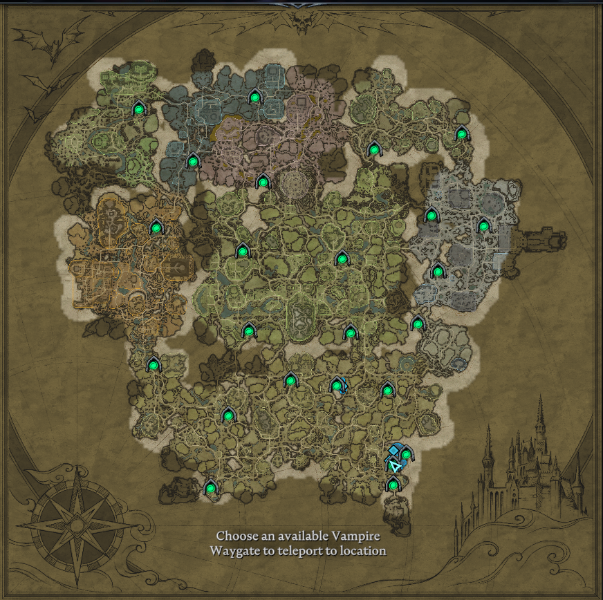

V Rising on Stunlock Studiosin kehittämä selviytymispeli, johon yhdistyy avoimen maailman tutkiminen sekä roolipelaaminen.
Peliä voi pelata yksin, yhdessä ystävien kanssa tai reaaliaikaisesti muita pelaajia vastaan.
Huhtikuun 2025 päivityksessä tuotiin peliin "Invaders of Oakveil" lisäys, joka laajensi tutkittavaa aluetta entisestään ja esittelee pelaajille uusia vihollisia, vihollispomoja, aseita sekä taikoja.
Pelaajien tehtävänä on metsästää verta, välttää polttavaa aurinkoa, rakentaa oma linna ja päihittää vihollispomoja. Oma linna toimii pelissä tukikohtana, jonne kerätään löydetyt materiaalit, valmistetaan tarvikkeet ja pysyt
n turvassa ulkopuolen vastuksilta.
Kartassa riittää tutkittavaa!
